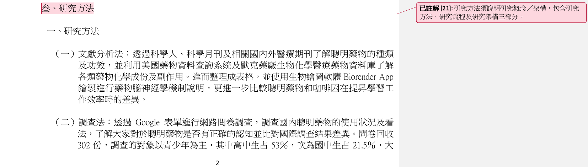
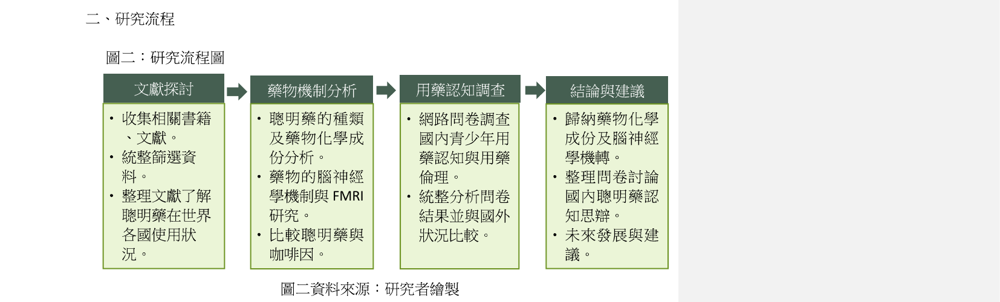
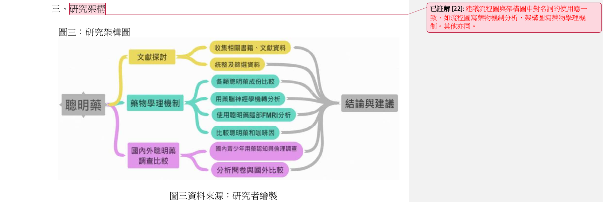
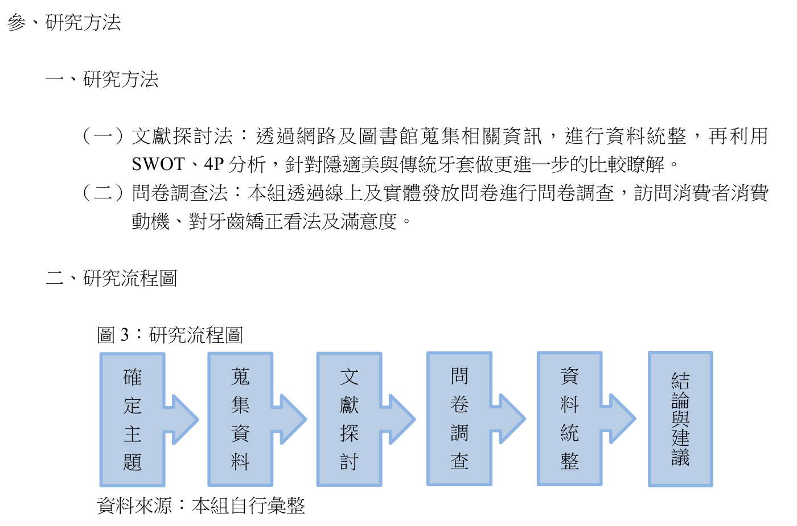
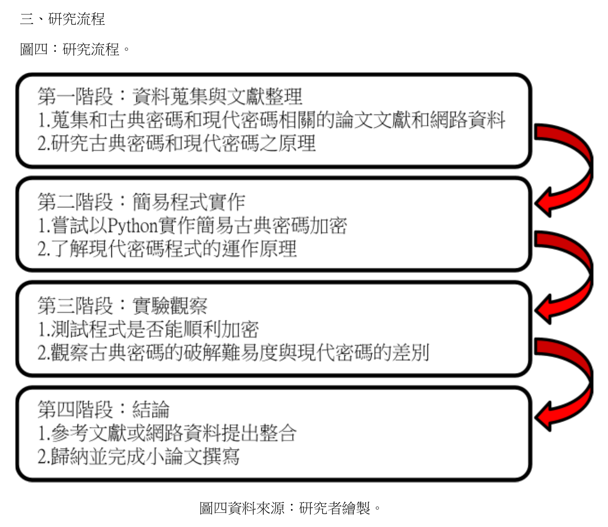
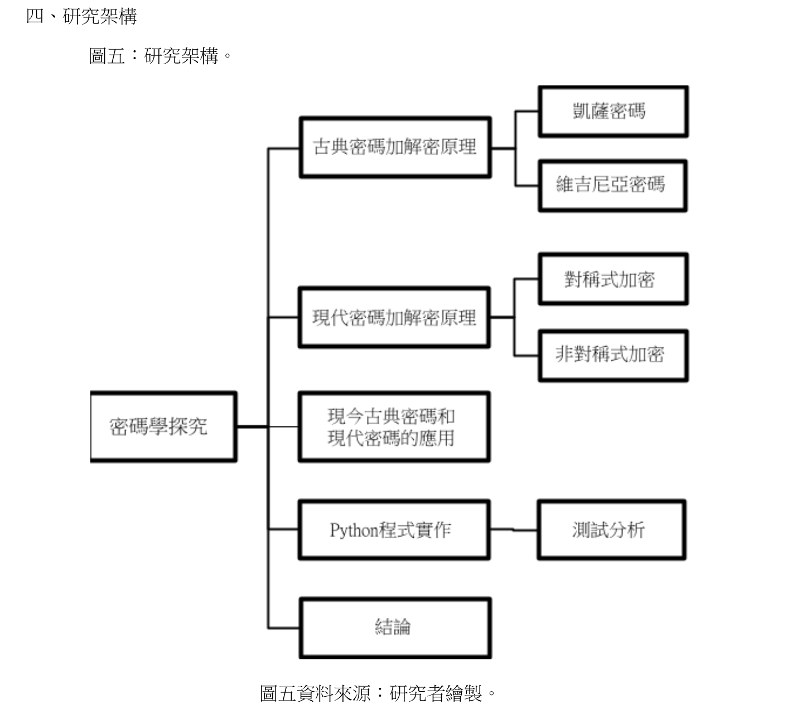
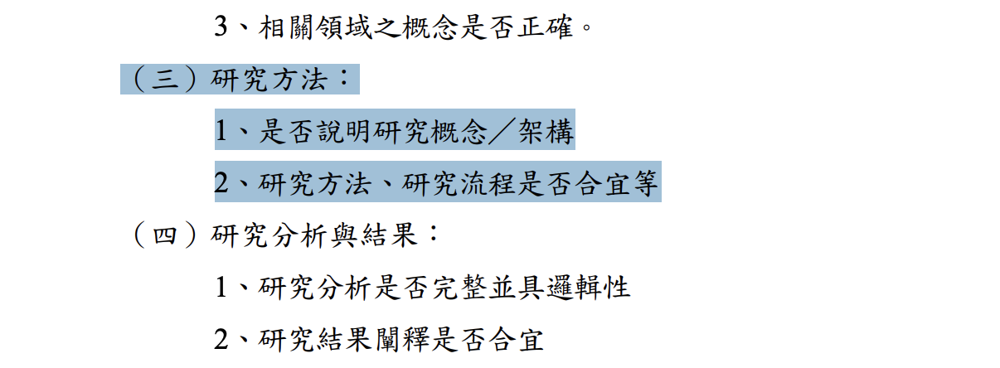
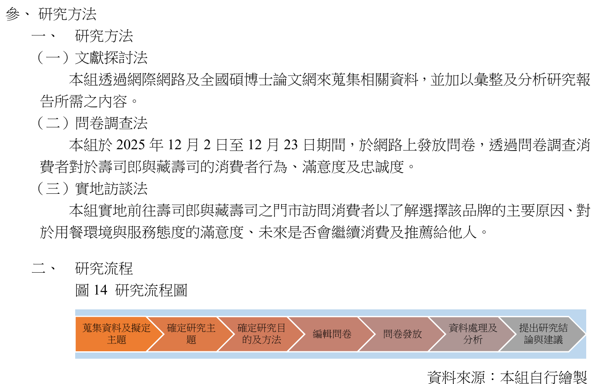
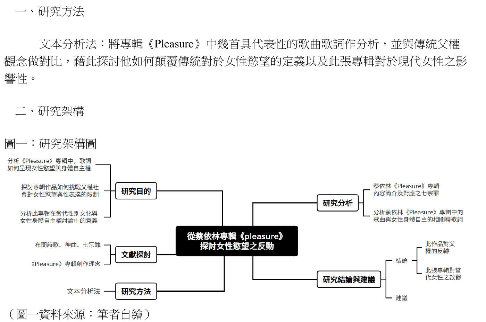

和美高中・115-1 專題寫作指導・502
研究流程
與研究架構
「參、研究方法」的二與三
2026.11.17
引起動機 1
你是否每次開始寫小論文，就打開資料庫找文獻，進入精神時光屋，不知今夕是何夕？
引起動機 2
老師問你「你大概在寫什麼」的時候，
張開嘴巴卻沒有聲音？
引起動機 3
打開 google 表單，
卻不知道要問誰，問什麼問題？
你需要
「視覺化的思考」
Part 1
原理解說
有畫過心智圖嗎？
有用嗎？
應該要有用，因為多數人是視覺的動物。
為什麼算數學要寫下來？
透過視覺輔助思考與記憶！
「參、研究方法」裡面
除了「一、研究方法」以外，還有
- 研究方法
- 研究流程
- 研究架構
不一定要全部都有
接下來看兩個例子：一個三樣都有，一個只放最基本的。
以曉明女中「聰明藥」的範例為例：都有（1/3）

以曉明女中「聰明藥」的範例為例：都有（2/3）研究流程

以曉明女中「聰明藥」的範例為例：都有（3/3）研究架構

以《笑容背後的選擇－高中生眼中的隱適美與傳統牙套》為例：只放最基本的

補充
流程與架構，差在哪？
- 研究流程｜時間順序回答「先做什麼、再做什麼」。箭頭代表：這一步做完，才能做下一步。
- 研究架構｜邏輯關係回答「這個研究由哪些部分組成、彼此怎麼連起來」。線條代表：屬於、或是影響。
流程像行程表，架構像地圖。
補充 同一篇作品，兩張圖：《古典密碼到現代加密》


補充
研究架構的兩種常見畫法
- 主題拆解型把大題目拆成幾個子題，再往下拆。文獻分析、文本分析、實作類常用。例：聰明藥、密碼學、《Pleasure》
- 變項關係型畫出「哪些因素 → 影響什麼結果」。問卷、實驗類常用。例：年級、每天滑手機時間 → 睡眠品質
小論文評分標準裡面的評分向度

Part 2
示範（範例）
三種層次
一、純交差了事
像《壽司郎及藏壽司之經營策略與顧客滿意度分析》，完全公版的研究流程，你如果做問卷調查法，完全可以套用。

不掉分，
但是對你自己沒什麼幫助
補充
找找看：上一頁的研究方法寫了三種方法，
研究流程圖裡看得到幾種？
二、讓別人知道你在幹嘛
以《古典密碼到現代加密——資訊安全的演進與實作》為例，研究流程把要做的事情寫出來，有了血肉，別人可以看研究流程的時候，知道這個作者大概要做什麼，是否合理。
永平高中，特優。全文：古典密碼到現代加密
三、幫自己知道自己在幹嘛
以《從蔡依林專輯《Pleasure》探討女性慾望之反動》為例，這個題目在文獻探討的時候，會發現
「很多有相關，但是沒有直接相關」
有點像是在玩積木，你身邊有超多零件，也都裝得上去。
但是你要挑哪些零件？
裝起來合理，又像你本來要做的東西？
做到一半的時候，就很適合用「研究架構」或「研究流程」來爬梳一下

Part 3
關鍵
關鍵 1
把你已經有的填上去
（所以你需要精準的抓住每一段內容的主旨）
關鍵 2
仔細看看，想想
「哪些是多的？」
「少了什麼？」
「應該怎麼接？」
關鍵 3
包含研究方法：
為什麼要是問卷？為什麼要是訪談？
實驗？觀察？
補充 方法、流程、架構，三處要對得起來
- 名詞要一致曉明的註解：「建議流程圖與架構圖中對名詞的使用應一致，如流程圖寫藥物機制分析，架構圖寫藥物學理機制。其他亦同。」
- 方法要出現研究方法寫了幾種，流程或架構裡就要找得到幾種。壽司那篇的「實地訪談」，就在流程圖裡消失了。
任務
- 把小組的「研究流程」或「研究架構」畫出來
- 不要用「完全公版」
- 下週每一組要完成並且報告給老師聽（4 min），老師將從研究流程或研究架構裡面找問題出來問
- 下週二先報告的組別有「早鳥優惠」
今天的範例，全文在這裡
- 曉明女中〈「聰明藥」之藥理學探究〉寫作範例與註解｜方法＋流程＋架構都有
- 振聲高中〈笑容背後的選擇－高中生眼中的隱適美與傳統牙套〉｜只放最基本的
- 士林高商〈壽司雙雄傳－壽司郎及藏壽司之經營策略與顧客滿意度分析〉｜公版流程
- 永平高中〈古典密碼到現代加密——資訊安全的演進與實作〉｜流程有血肉
- 大同高中〈從蔡依林專輯《Pleasure》探討女性慾望之反動〉｜用架構挑零件
請用學校帳號登入 Google 開啟。整個資料夾：11/17 研究流程與架構範例